Exploring QC: RunScatter and PCA
Source:vignettes/articles/tutorial-05-run-scatter.Rmd
tutorial-05-run-scatter.RmdThe built-in lipidomics dataset supports two complementary
QC-exploration views. plot_runscatter() shows a feature’s
signal across the analysis sequence, which helps to identify trends,
detect outliers, and assess analytical performance. Principal component
analysis (plot_pca(), plot_pca_loading(),
detect_outlier_pca()) adds a multivariate view for spotting
injection outliers and residual batch effects. The RunScatter examples
all use a single feature, TG 48:2 [-18:1].
1. Setup
We load the dataset, normalise to internal standards, and compute the QC metrics that several of the plots below draw on.
library(mrmhub)
mexp <- lipidomics_dataset
mexp <- normalize_by_istd(mexp)
mexp <- calc_qc_metrics(mexp)2. Basic plot
A minimal call plots all QC and sample types for one feature.
plot_runscatter(
mexp,
variable = "intensity",
include_feature_filter = "TG 48\\:2 \\[\\-18:1\\]",
rows_page = 1, cols_page = 1)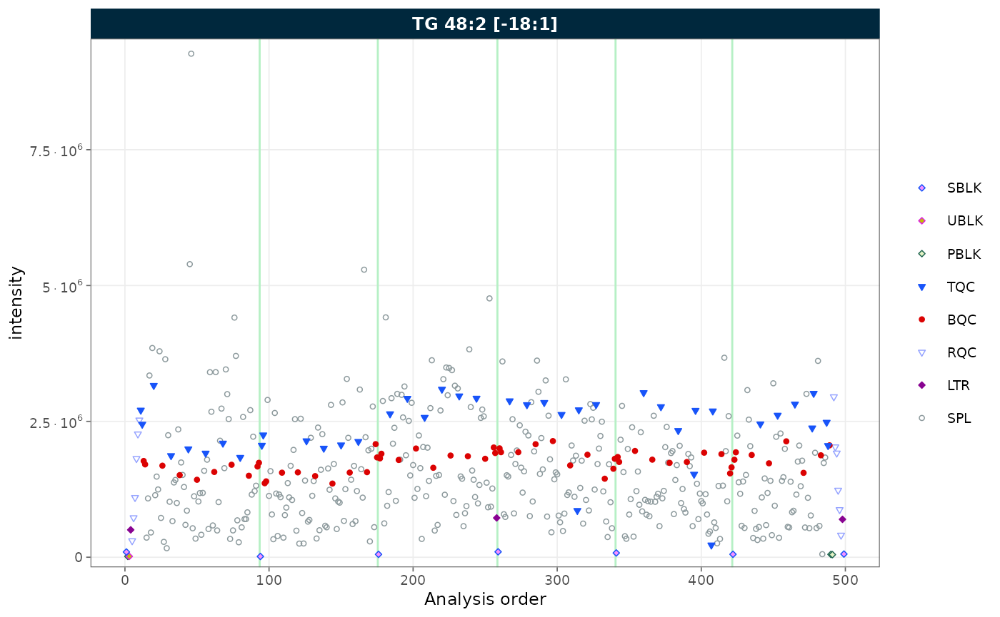
Figure 1. RunScatter of TG 48:2 [-18:1] across the analysis sequence, all sample types shown.
3. Selecting QC types
Use qc_types to display only specific sample types.
plot_runscatter(
mexp,
variable = "intensity",
include_feature_filter = "TG 48\\:2 \\[\\-18:1\\]",
qc_types = c("BQC", "SPL"),
rows_page = 1, cols_page = 1)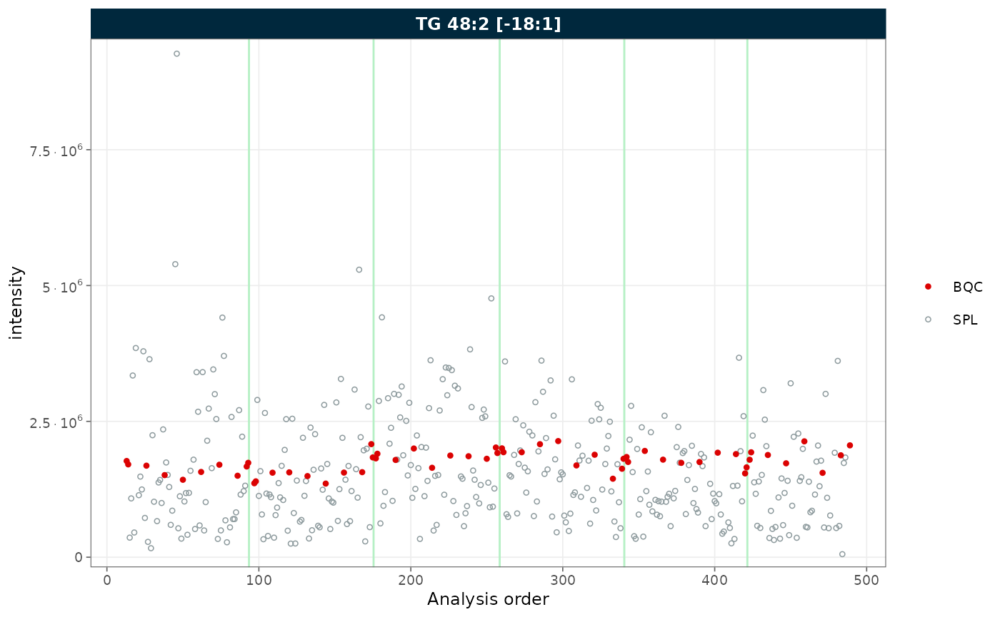
Figure 2. RunScatter restricted to batch QC (BQC) and study (SPL) samples.
4. Batch display
Set show_batches = TRUE and
batch_zebra_stripe = TRUE to highlight batch boundaries
with alternating shaded areas.
plot_runscatter(
mexp,
variable = "intensity",
include_feature_filter = "TG 48\\:2 \\[\\-18:1\\]",
show_batches = TRUE,
batch_zebra_stripe = TRUE,
rows_page = 1, cols_page = 1)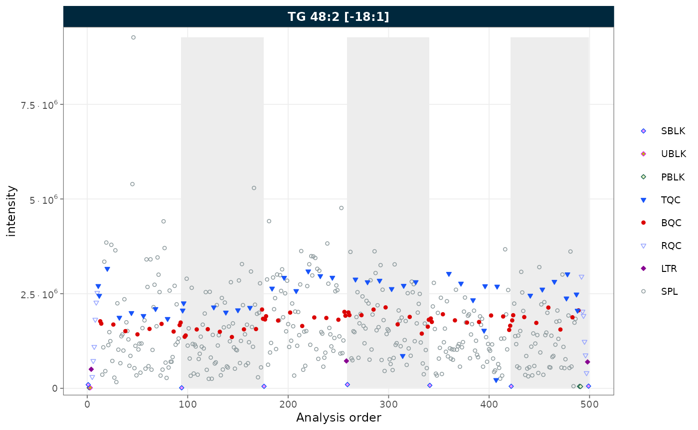
Figure 3. RunScatter with batch boundaries marked by alternating zebra stripes.
5. Reference lines
Show mean ± k × SD reference lines with
show_reference_lines = TRUE. Use
reference_sd_shade to display the range as a shaded band
instead of lines.
plot_runscatter(
mexp,
variable = "intensity",
include_feature_filter = "TG 48\\:2 \\[\\-18:1\\]",
qc_types = c("BQC", "SPL"),
show_reference_lines = TRUE,
ref_qc_types = "BQC",
reference_k_sd = 2,
reference_sd_shade = TRUE,
rows_page = 1, cols_page = 1)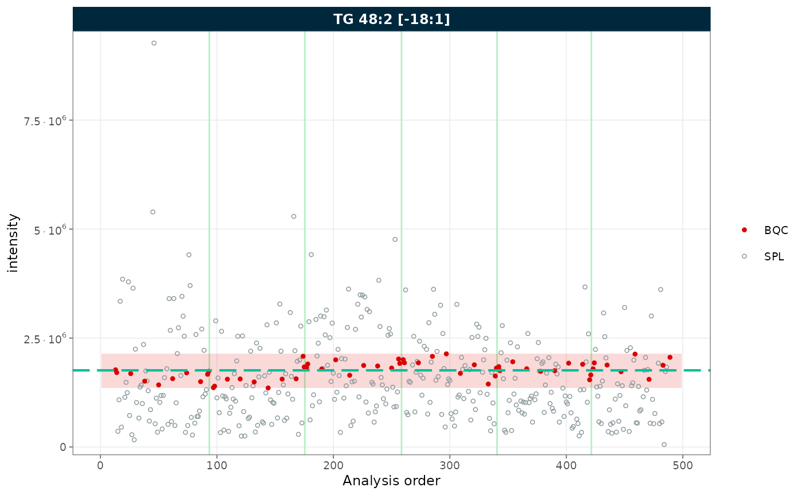
Figure 4. RunScatter with a mean ± 2 SD reference band computed from the BQC samples.
6. Outlier capping
Use cap_outliers = TRUE to cap extreme values based on
MAD fences. This is useful when outliers obscure the trends of QC or
study samples.
plot_runscatter(
mexp,
variable = "intensity",
include_feature_filter = "TG 48\\:2 \\[\\-18:1\\]",
cap_outliers = TRUE,
cap_sample_k_mad = 3,
rows_page = 1, cols_page = 1)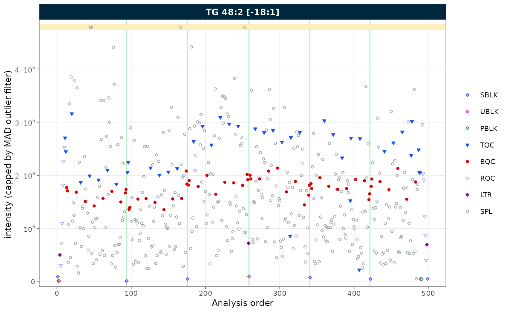
Figure 5. RunScatter with extreme values capped at MAD-based fences.
7. Log scale
Set log_scale = TRUE to apply a log10 transformation to
the y-axis. Zero or negative values are replaced with the minimum
positive value divided by 5.
plot_runscatter(
mexp,
variable = "intensity",
include_feature_filter = "TG 48\\:2 \\[\\-18:1\\]",
log_scale = TRUE,
rows_page = 1, cols_page = 1)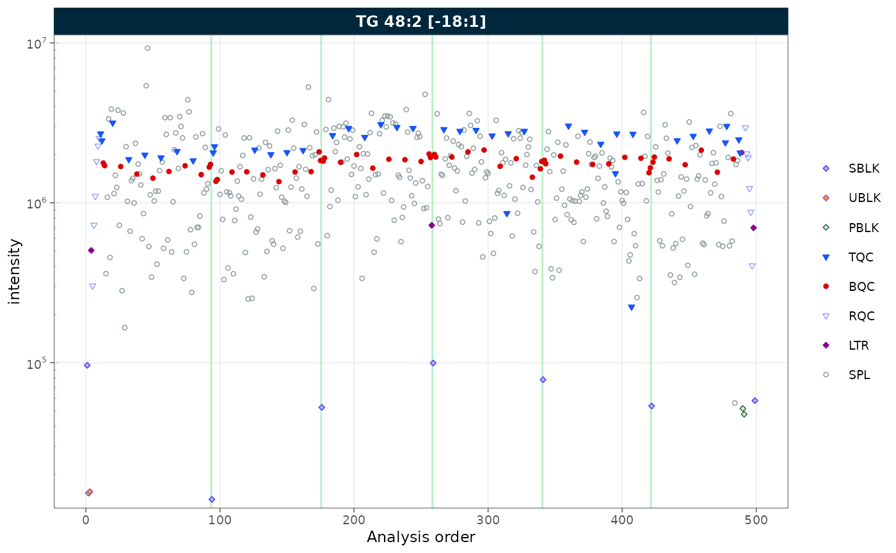
Figure 6. RunScatter with a log10-transformed y-axis.
8. Removing gaps in the analysis sequence
Gaps in the x-axis can arise in two ways:
-
Filtered QC types: when only a subset of QC types
is selected, the unselected positions leave gaps. Use
collapse_excluded = TRUEto close them. -
Unannotated analyses: when some runs in the
analytical sequence have no corresponding entry in
@dataset(e.g. solvent blanks or system suitability injections that were not imported), the analysis order contains discontinuities. Useremove_gaps = TRUEto collapse these and mark the former gap positions with vertical indicator lines.
Both options can be combined.
Collapsing excluded QC types
plot_runscatter(
mexp,
variable = "intensity",
include_feature_filter = "TG 48\\:2 \\[\\-18:1\\]",
qc_types = c("LTR"),
collapse_excluded = TRUE,
rows_page = 1, cols_page = 1)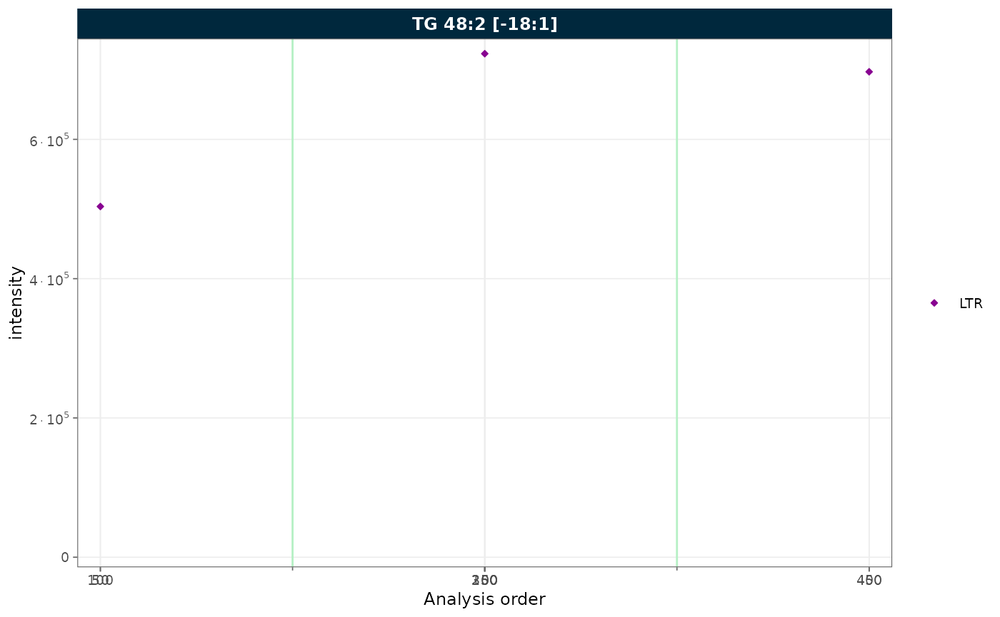
Figure 7. RunScatter of a single QC type (LTR) with the excluded positions collapsed.
Removing gaps from unannotated analyses
To demonstrate this feature, we first simulate a dataset with unannotated analyses by excluding a block of runs from batch 2. This creates a contiguous gap in the analysis order, as would occur when solvent blanks or system suitability injections are not imported.
mexp_gaps <- exclude_analyses(
mexp,
analyses = c(
paste0("Longit_batch2_", 1:45),
"Longit_batch2_PQC 12",
"Longit_batch2_PQC 13",
"Longit_batch2_PQC 14",
"Longit_batch2_PQC 15",
"Longit_batch2_TQC13",
"Longit_batch2_TQC14",
"Longit_batch2_TQC15"
),
clear_existing = TRUE)
mexp_gaps <- normalize_by_istd(mexp_gaps)
mexp_gaps <- calc_qc_metrics(mexp_gaps)
plot_runscatter(
mexp_gaps,
variable = "intensity",
include_feature_filter = "TG 48\\:2 \\[\\-18:1\\]",
remove_gaps = TRUE,
rows_page = 1, cols_page = 1)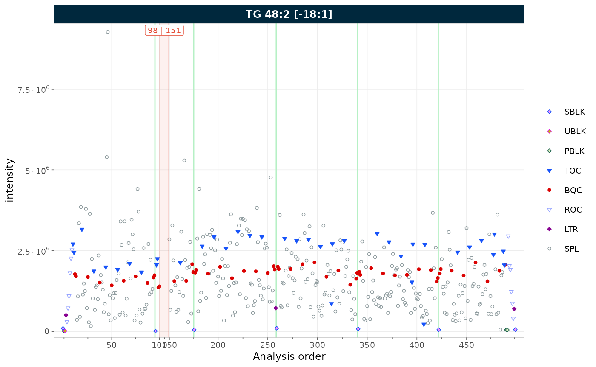
Figure 8. RunScatter with vertical indicator lines marking the collapsed unannotated runs.
Combining both
When filtering to a single QC type and the sequence contains
unannotated runs, combine collapse_excluded and
remove_gaps to produce a compact, fully annotated plot.
plot_runscatter(
mexp_gaps,
variable = "intensity",
include_feature_filter = "TG 48\\:2 \\[\\-18:1\\]",
qc_types = c("BQC"),
collapse_excluded = TRUE,
remove_gaps = TRUE,
rows_page = 1, cols_page = 1)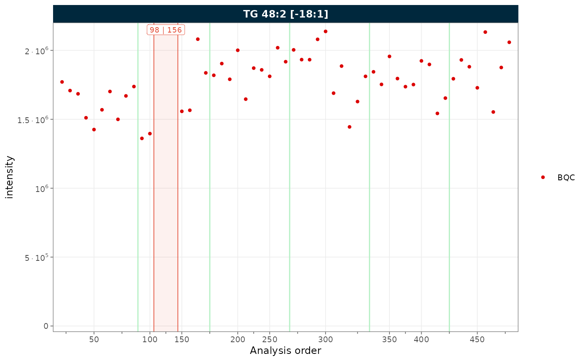
Figure 9. RunScatter combining collapsed excluded types with gap indicators.
9. Label wrapping
When feature names are long, strip labels can overflow. Set
label_wrap = TRUE to wrap labels across multiple lines,
controlled by label_wrap_width. Here we show three features
to illustrate the effect on strip text.
plot_runscatter(
mexp,
variable = "intensity",
include_feature_filter = "TG 48\\:2 \\[\\-18:1\\]",
label_wrap = TRUE,
label_wrap_width = 8,
rows_page = 1, cols_page = 3, specific_page = 1)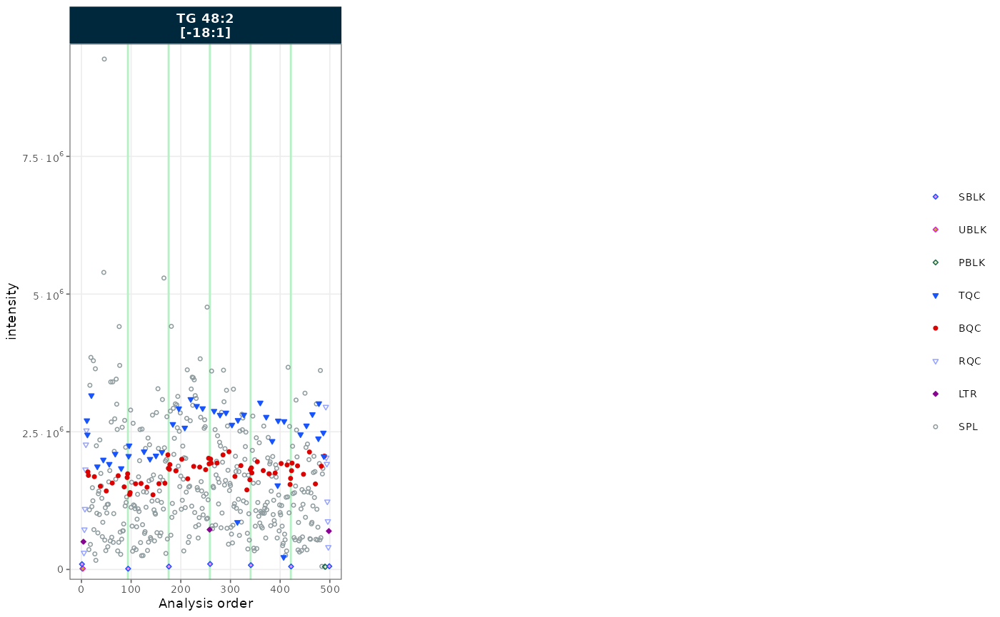
Figure 10. RunScatter of three features with wrapped strip labels.
10. Trend curves
Trend curves visualise the fitted signal used during drift or batch
correction. They require a prior correction step.
show_trend = TRUE will error if no drift or batch
correction has been applied. To plot the values before the last
correction, append _before to the variable name
(e.g. variable = "intensity_before"); for the original
uncorrected values use _raw
(e.g. variable = "intensity_raw").
See the drift and batch correction tutorial for a worked example.
11. Principal component analysis (PCA)
PCA is a routine multivariate check in targeted MS workflows: it
helps spot injection outliers, visualise residual batch effects, and
confirm that drift or batch corrections reduced unwanted variance. The
plots below reuse the mexp prepared in Setup.
Score plot by QC type
The score plot summarises sample variance in two dimensions.
Biological QCs (BQC) should cluster tightly near the centre if
normalisation and any corrections succeeded, while study samples (SPL)
typically show wider biological spread. The
ellipse_variable controls the grouping of the confidence
ellipses (qc_type, batch_id, or
"none"); a markedly dispersed QC cluster suggests
insufficient normalisation or remaining instrument drift.
plot_pca(
mexp,
variable = "norm_intensity",
qc_types = c("BQC", "SPL"),
ellipse_variable = "qc_type")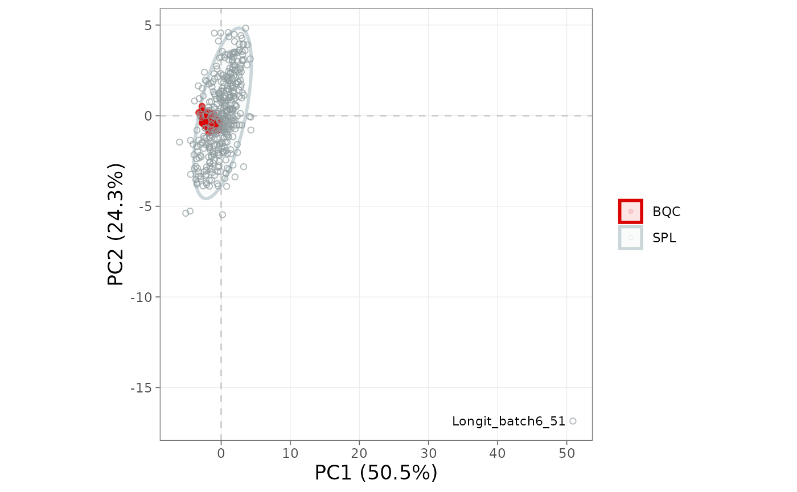
Figure 11. PCA score plot coloured by QC type, with confidence ellipses per group.
Score plot by batch
If samples separate along PC1 or PC2 by batch_id, batch
effects persist and a centering-based correction is likely warranted.
Running the same plot before and after
correct_batch_centering() confirms that the batch ellipses
overlap after correction.
plot_pca(
mexp,
variable = "norm_intensity",
qc_types = c("BQC", "SPL"),
ellipse_variable = "batch_id")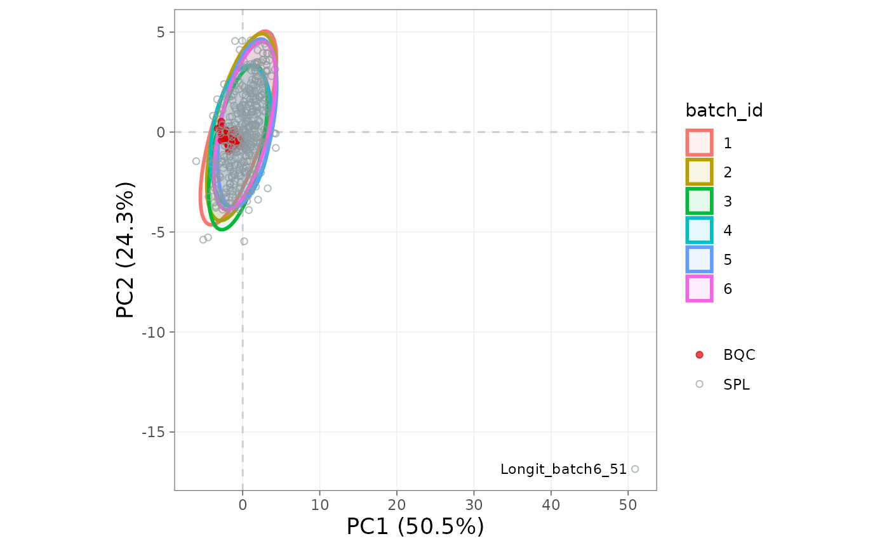
Figure 12. PCA score plot coloured by batch.
Loadings
The loading plot identifies the features driving the principal components; features at the extremes contribute most to sample separation. A single feature dominating PC1 should be inspected: it is often a saturated or contaminated transition rather than a biological signal.
plot_pca_loading(
mexp,
variable = "norm_intensity",
qc_types = c("BQC", "SPL"))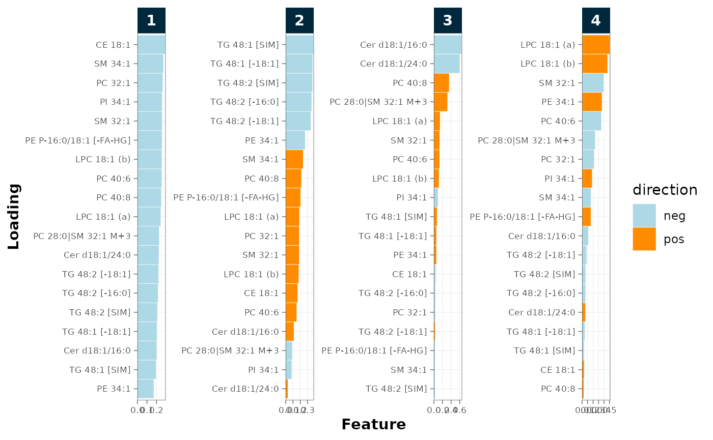
Figure 13. PCA loadings identifying the features driving each component.
Detecting outlier injections
detect_outlier_pca() flags analyses whose score on a
chosen principal component lies outside a fence, defined as either
mean ± k·SD (outlier_detection = "sd") or
median ± k·MAD (outlier_detection = "mad"),
with fence_multiplicator setting k. It returns the
analysis_id values that exceed the fence on the selected
component, or NULL if none are flagged.
outlier_ids <- detect_outlier_pca(
mexp,
variable = "intensity",
filter_data = FALSE,
pca_component = 1,
qc_types = c("BQC", "SPL"),
outlier_detection = "mad",
fence_multiplicator = 4)
outlier_ids
[1] "Longit_batch6_51"Choice of fence method
The SD-based fence is sensitive to the very outliers it tries to detect: a single extreme observation inflates the SD estimate. The MAD-based fence is robust to a few large deviations and is generally preferable for QC screening. A typical multiplier isfence_multiplicator = 3 (≈99.7% under normality) or
4 for a more permissive screen. The function evaluates one
principal component at a time; re-run with
pca_component = 2 to screen PC2.
A sample flagged by PCA is a candidate for investigation, not a verdict. Outlier patterns frequently reflect genuine biology (e.g. a disease group or a sex difference), so an injection should be excluded only where a documented technical cause is identified: a failed injection, contamination, instrument fault, or sample-handling error.
Excluding analyses and features
After visual and documented confirmation, remove the offending
injections or features. exclude_analyses() and
exclude_features() flip the affected rows’
valid_analysis / valid_feature flag so
downstream steps skip them, while the original data remain in
mexp@dataset_orig; setting
clear_existing = TRUE replaces any previous exclusion list
rather than appending.
# Review candidates before excluding
mexp@annot_analyses |>
dplyr::filter(analysis_id %in% outlier_ids) |>
dplyr::select(analysis_id, qc_type, batch_id, analysis_order)
# Exclude after technical confirmation
mexp <- exclude_analyses(mexp, analyses = outlier_ids, clear_existing = FALSE)
# Exclude a known-problematic feature (e.g. a saturated transition)
mexp <- exclude_features(mexp, features = c("PC 32:0"), clear_existing = FALSE)Interpretation guide
| PCA pattern | Likely cause | Action |
|---|---|---|
| BQC samples dispersed across the score plot | Poor precision; ISTD assignment problem | Inspect plot_normalization_qc(); verify ISTD
pairing |
Clear separation by batch_id on PC1 or PC2 |
Uncorrected batch effect | Apply correct_batch_centering()
|
| Single injection isolated from all groups | Technical outlier | Investigate cause; exclude only with documented reason |
| One feature dominates loadings on PC1 | Saturation, contamination, or single-transition artefact | Inspect with plot_runscatter(); exclude feature if
confirmed |
| BQC tight, SPL spread | Genuine biological variability | Proceed |
Any of the figures above can be written to a file with
save_plot(), at a size given in mm (or cm, in, pt, px):
plot_pca(mexp, variable = "norm_intensity", ellipse_variable = "batch_id") |>
save_plot("output/pca_batch.pdf", width = 180, height = 120)The plot is returned visibly, so the figure still appears in the notebook alongside being saved.
Dense score plots and long run-scatter pages are often better saved as PNG or TIFF than as PDF — see Saving plots.
Next steps
- Drift and batch correction: apply and inspect corrections
- Visualisation functions: the full list of plotting functions
-
Customising
plots: sizing text, legends and points without
+ theme() - Lipidomics workflow: where these checks fit in the pipeline